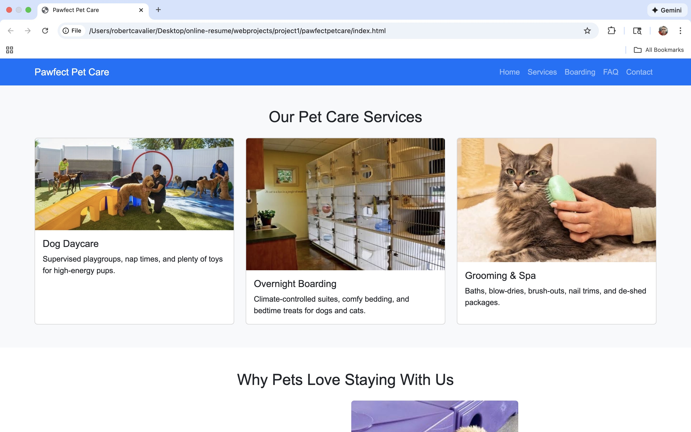
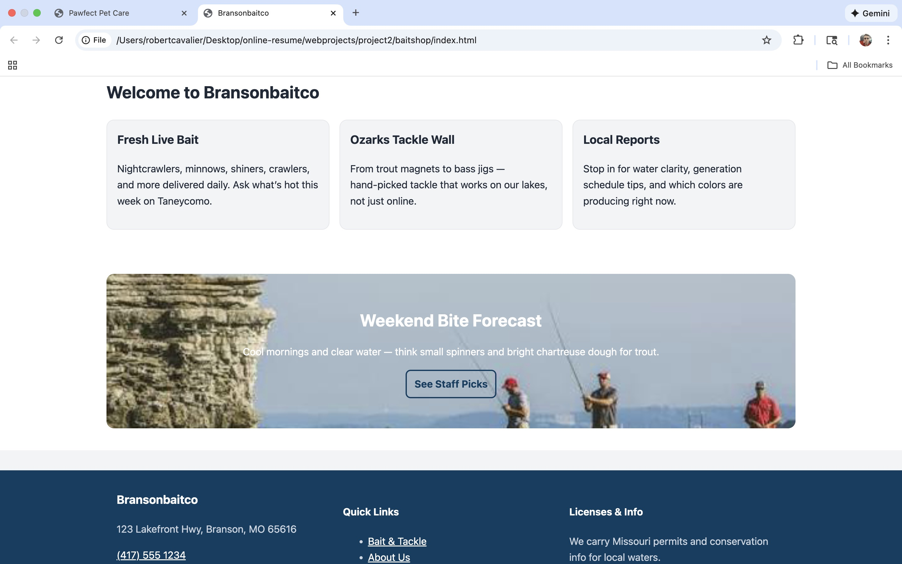
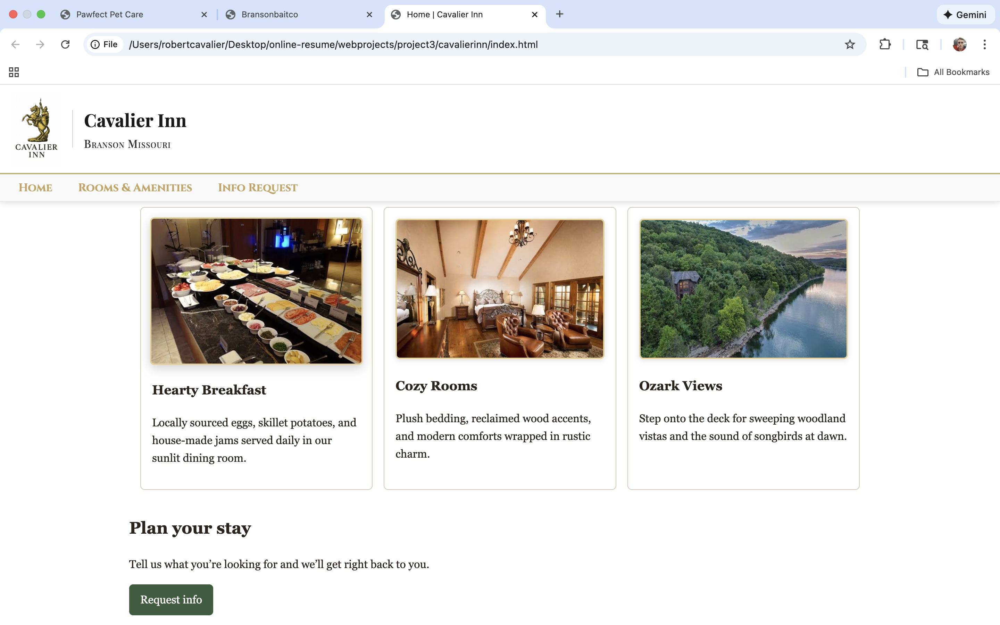

Pawfect Pet Care Website
pet care website that uses semantic HTML and basic CSS layout.
The site includes navigation, service descriptions, images, and a simple responsive design
so pet owners can easily find information on any device.
View Pawfect Pet Care project folder

Branson Bait Co. Website
A small business website for a bait shop in the Ozarks. This project focuses on clear product
listings, readable typography, and simple visuals. It helped me practice working with images,
lists, and alt text for accessibility.
View Branson Bait Co. project folder

Cavalier Inn Resort Concept Site
A concept website for a luxury resort brand. This project uses a clean layout, strong headings,
and consistent color choices inspired by high-end hotel websites. It allowed me to experiment
with branding, sections, and simple responsive design.
View Cavalier Inn project folder